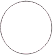
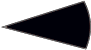

Пам’ятки нерухомої культурної спадщини України. Загальна характеристика
Густота пам’яток нерухомої культурної спадщини за регіонами
(одиниць на 1 км²)
| до 0,2 | |
| 0,2-0,3 | |
| 0,31-0,40 | |
| понад 0,40 |
Кількість пам’яток нерухомої культурної спадщини за регіонами
(одиниць)
| до 2500 | |
| 2500 - 5000 | |
| 5001 - 10000 | |
|  | понад 10000 |
Види пам'яток
| архітектури та містобудування | |
| археології | |
| історії | |
| монументального мистецтва | |
|  | науки і техніки |
| садово-паркового мистецтва | |
| ландшафтні |
Примітка. Інформація по АР Крим подана станом на початок 2014 р.